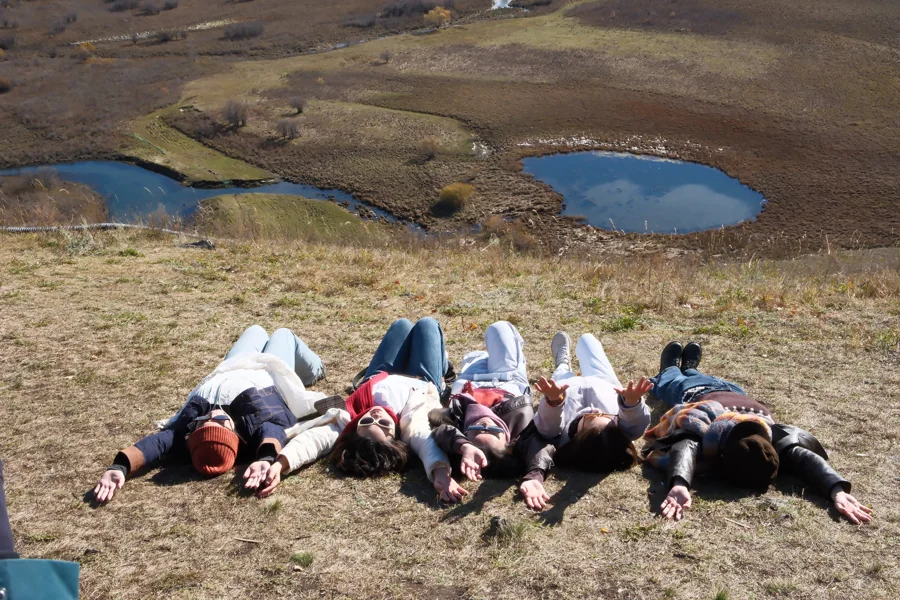
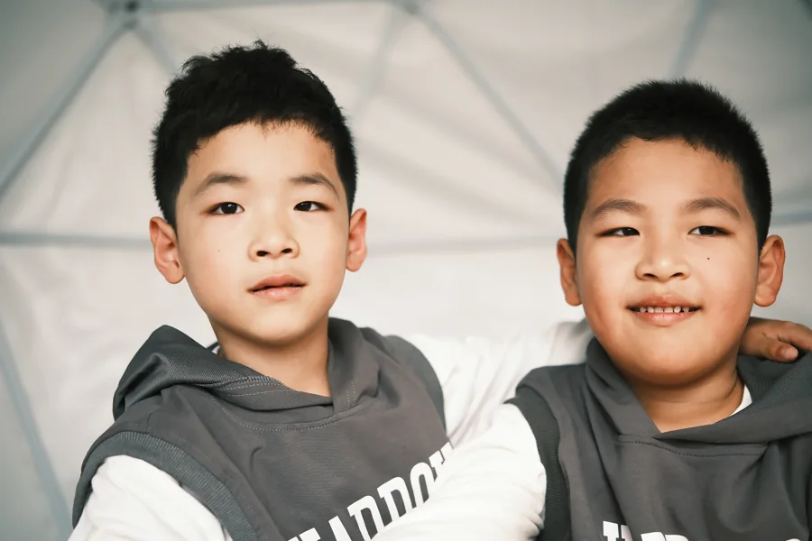
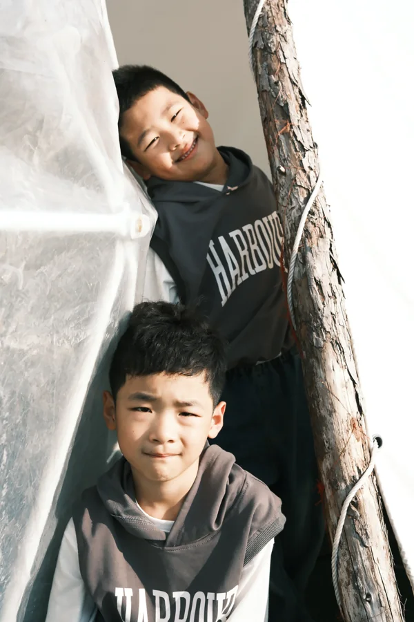
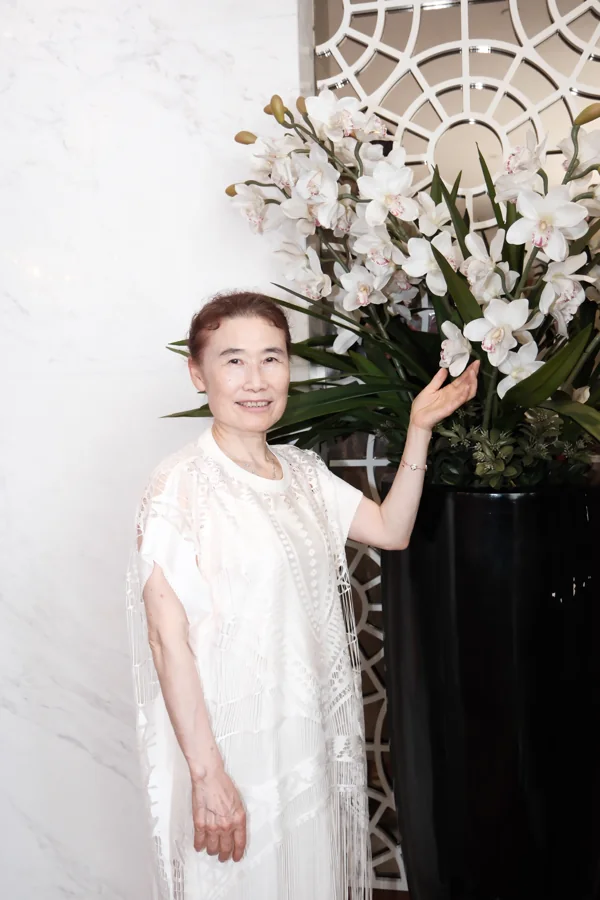
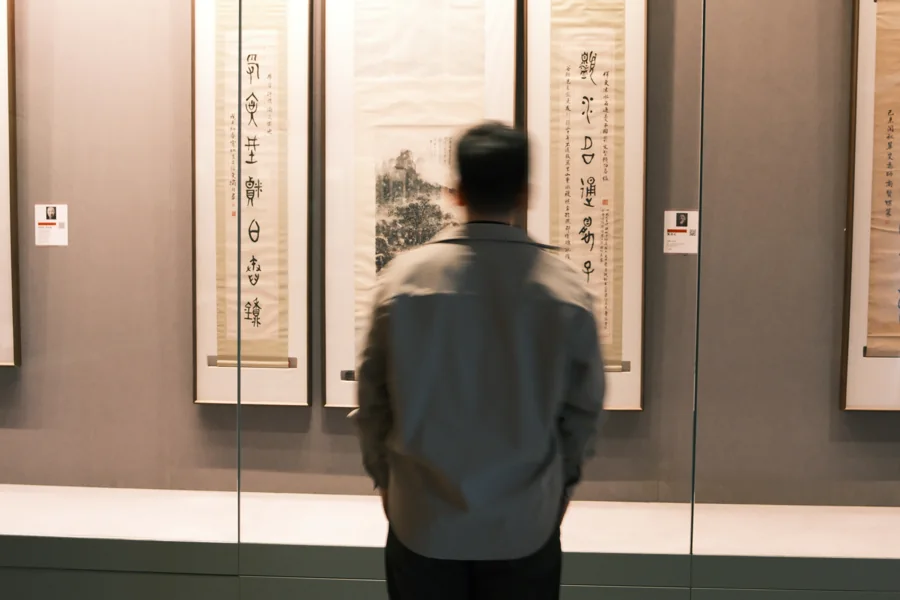
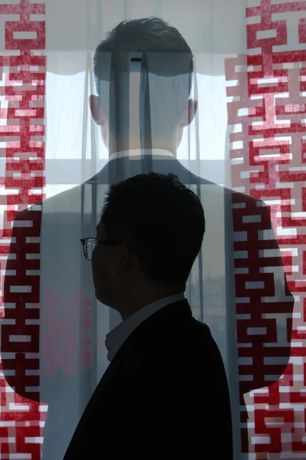

PHOTO BY FELIX / A PERSONAL EXHIBITION
从远方，
到身旁。
风景 / 人文 / 光影 / 人像 · 54 件摄影作品
THE EXHIBITION / 54 PHOTOGRAPHS
从远方，到身旁。
四个章节，一条观看的路径。
风景里的辽阔，生活里的温度，光影中的停留，以及人的目光。
01
LAND & DISTANCE · 08 WORKS
风景先看见远方。
从海天之间的色彩，到山野里的片刻停留。让目光在开阔处出发。



02
LIFE & ENCOUNTERS · 18 WORKS
人文走进生活之中。
田间、街巷、湖岸与家。照片里的人与日常，让远方有了温度。


风里的童年 / 露营日记


岁月欢聚 / 生日记忆

03
LIGHT & FORM · 08 WORKS
光影等一束光经过。
窗格、回廊、玻璃与暗部。顺着光的方向，看空间如何留住一个身影。



04
PEOPLE & INTIMACY · 20 WORKS
人像最后，回到目光。
从一组完整的窗光肖像，到旅途、婚礼与家中的亲密片刻。
窗光肖像 / 六个片刻


相逢 / 旅途、婚礼与家庭


{kind=link}
{kind=link}
{kind=link}
{kind=link}
{kind=link}
{kind=link}
{kind=link}
{kind=link}
{kind=link}
{kind=link}
{kind=link}
{kind=link}
{kind=link}
{kind=link}
{kind=link}
{kind=link}
{kind=link}
{kind=link}
{kind=link}
{kind=link}
{kind=link}
{kind=link}
{kind=link}
{kind=link}
A FAMILY STORY / 08 WORKS
家的温度
从怀抱里的小小世界，到一家人的团圆。
把平凡日子里的亲密，留在照片里。
{kind=link}
{kind=link}
{kind=link}
{kind=link}
{kind=link}
家庭手记 / 三幅拼贴
{kind=link}
{kind=link}
{kind=link}
走过远方，也看见身旁。
回到展览目录 ↑
BEHIND THE LENS
我看见的，
也想让你看见。
我是 Felix。拍摄旅途、自然光下的人像，
以及日常里值得留下的片刻。
Felix.
LET’S CREATE
下一个故事，
从这里开始。
人像摄影 / 品牌影像 / 图片使用咨询
liufei109@163.com ↗